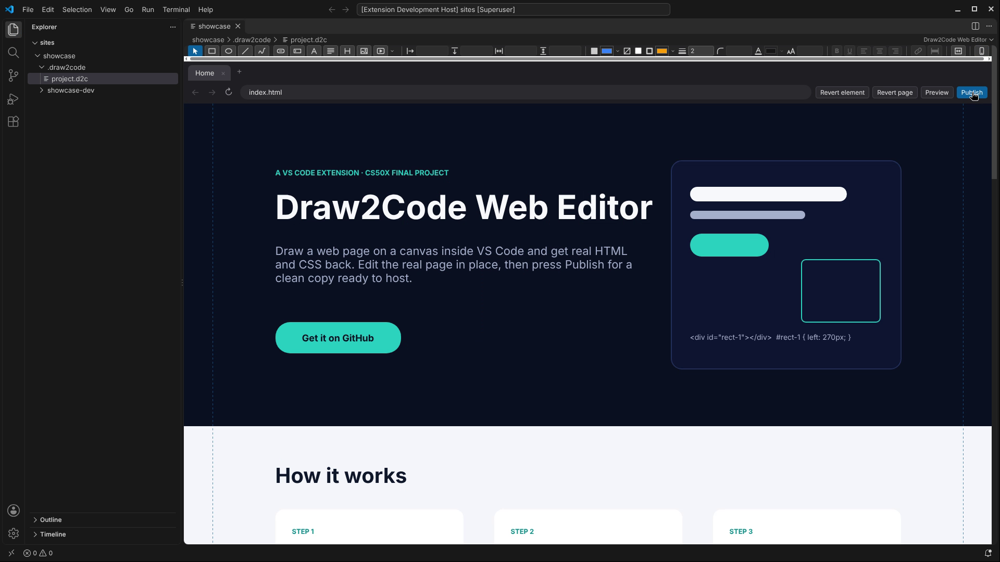

Draw rectangles, text, buttons, pictures and videos on a canvas inside VS Code. Edit the real page in place, then press Publish for a clean copy ready to be served.
Get it on GitHub See how it works
A two-minute time lapse of this site, from New Design to Publish and a local server, playing in the player the editor adds to a site with a video.
A project is two copies: you edit MyProject-dev, and Publish rebuilds MyProject-prod as clean code.
Pick a tool and drag on a 1440px page: rectangles, ellipses, lines, pen strokes, buttons, inputs, labels, text, headings, pictures and videos.
Every edit is written to real HTML and CSS in -dev. Retype by double-click, move, resize, restyle, link, and lay the page out for phones.
Press Publish: -prod is rebuilt with no markers and no editor stylesheets. Point any web server at it, as this page was.
Rectangles, ellipses, lines, pen strokes, buttons, inputs, labels, text and headings, with snapping guides while you draw.
Double-click any text or button and type; Shift+Enter starts a new line. Enter keeps the words, Esc puts the old ones back.
Fill, border and text colours by hex code, the last ten colours one click away, and rounding in px on boxes, buttons and pictures.
Link a button or text to a page, a section or a web address. Add pictures, your own videos in the site's own player, or YouTube and Vimeo links.
One click gives the page a layout of its own for phones, drafted from the desktop layout; then move and resize for phones only.
Ctrl+Z and Ctrl+Y, one history per site, 100 steps deep. Ctrl+C, Ctrl+V and Ctrl+D copy elements, even onto another page.
Draw a web page in VS Code. Get real HTML and CSS back. Draw2Code Web Editor is my final project for CS50x.
Save writes your edits into MyProject-dev while a server can keep serving MyProject-prod. Publish is the only thing that rebuilds -prod. The one trace left is .draw2code/project.d2c, which is how the editor recognises the project.
Draw2Code Web Editor · CS50x final project · MIT licence
GitHub: Beansy11